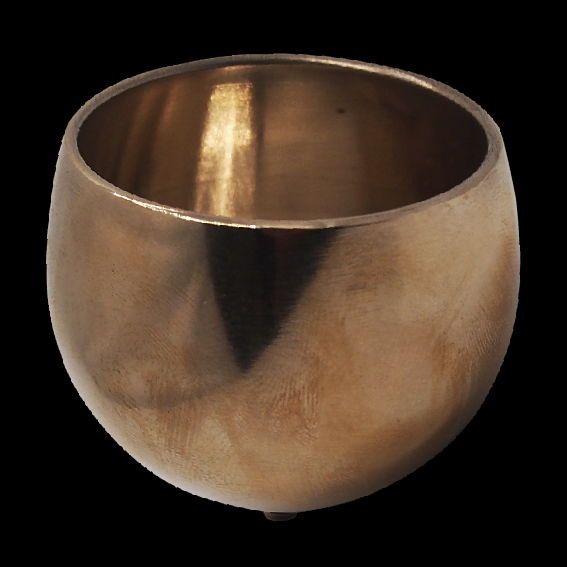
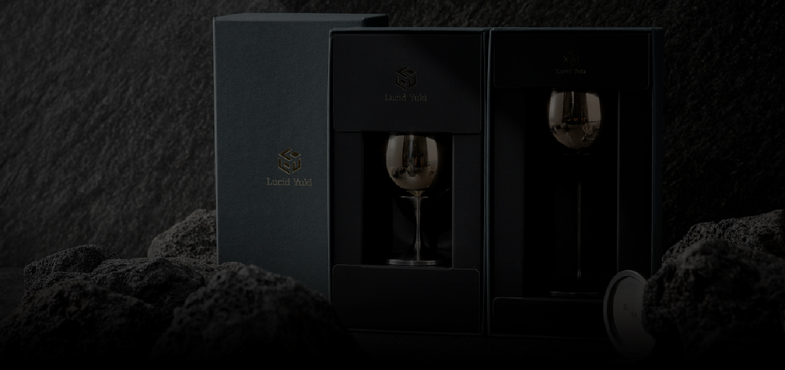
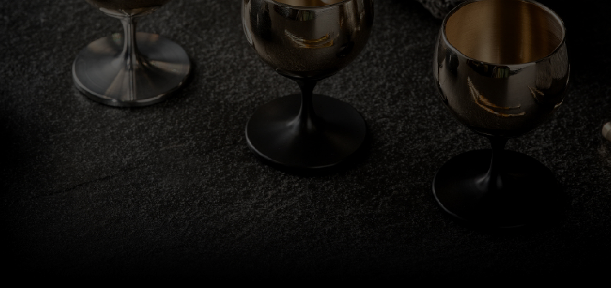

Pursuing the Perfect Tableware.
A unique tableware design that blends the elegance of Korean aesthetics with modern
minimalism. Its surface reflects light from different angles, creating subtle,
ever-changing brilliance that makes each piece feel like a work of art.
Rather than relying on excessive decoration, it highlights the natural texture and depth
of the materials, expressing understated beauty. Paired with food, it enhances
presentation with a refined and sophisticated atmosphere.
-

The Elegance of Traditional Yugi, Enhanced with the Practicality of Stainless Steel and AluminumPreserving the warm color and distinctive texture of traditional Yugi, this cup combines lightweight durability with easy maintenance. The Yugi cup helps retain the temperature of your beverage, while the sturdy stainless steel and aluminum holder provides stability and portability. A premium drinking vessel that harmoniously blends timeless Korean craftsmanship with modern functionality.
-

01 Yugi CupExperience the warmth of handcrafted Yugi, meticulously made by skilled artisans.
-

02 Customizable Cup HolderChoose your preferred length and material to create a cup holder that perfectly suits your style.